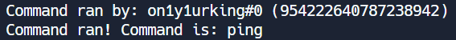

Last Updated: 19th December, 2023
You may use the Bot in accordance with these terms for lawful purposes only. By utilizing the Bot, you agree to follow not only our terms but also Discord's Terms of Service (Discord TOS). It is crucial to understand that malicious use of this bot is strictly prohibited, and engaging in such activities may result in severe consequences, including banning and blacklisting.
We reserve the right to blacklist users from utilizing this bot for the following reasons:
By using the Bot, you acknowledge and agree to abide by these usage guidelines. Violation of these terms may lead to immediate banning and blacklisting. We reserve the right to take necessary actions to maintain the integrity and security of our bot and its user community.
3BitBot stores user ID's and usernames. This is to update user balances for the economy section. I do not, and will not share these ID's to anyone due to safety reasons. Your user ID is stored to update your balances in the economy, and your username is stored to update the leaderboard. For the leaderboard, you can remove yourself from the bot by using c!optout. Only under one condition can I permanately store your user ID, is when you are blacklisted from the bot. We also store your data temporarily in the console logs. (Given below)
We collect this data for a faster blacklist time. So that we can easily find a person that has been reported by another user. This data is however temporary, we do not store it for malicious purposes, nor will. This is only to blacklist users faster.
If you dont want your user ID to be stored in our database, you may join the support server (Support Server) and contacting the owner of the bot to request your ID to be removed. However your ID cannot and will not be removed if you are blacklisted to protect the safety of others. You may appeal the blacklist however. Note: Your data can only be viewed by the owner of this bot, so there isnt a reason to delete it, however if you wish to do so, you may ask the owner.
We store your data indefinitely, if we don't, your economy progress may be wiped. We store your data for the following things:
If you have been blacklisted due to suspected malicious activity or bot bypass, you can provide evidence to prove your innocence and be unblacklisted. However, if you are blacklisted again in the future, you will need to provide proof once again. If another user falsely reports you for malicious activity involving the bot, and you are blacklisted as a result, you will be unblacklisted once you provide evidence proving you didn't do anything malicious with the bot. The user who made the false report will be permanently blacklisted to prevent any further false accusations.
If you feel concerned for any of our safety practices, you may go to the Support Server and question the owner